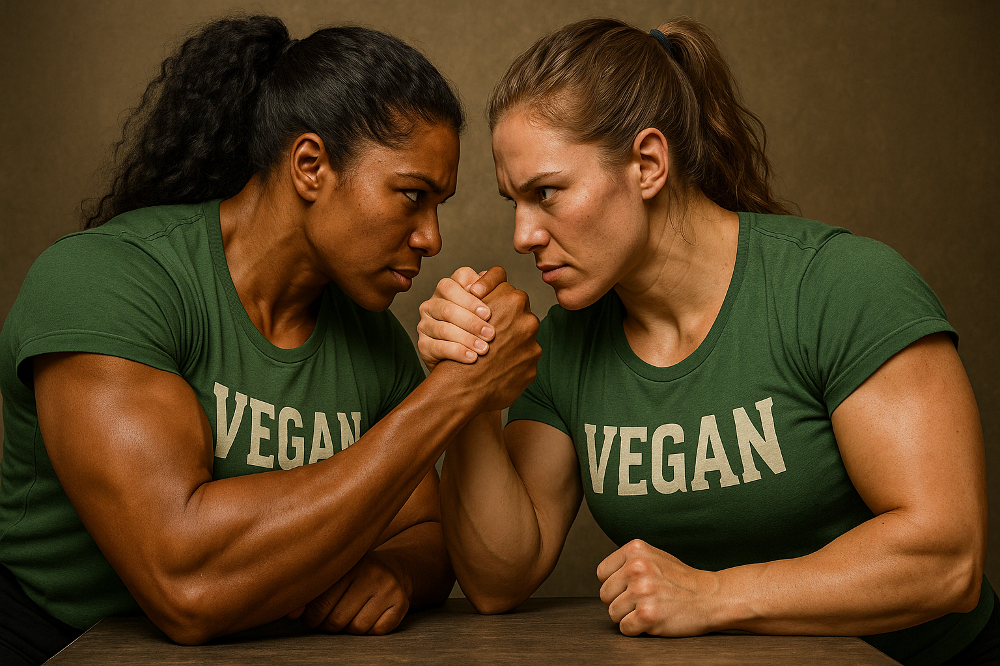

Hemp Protein vs Pea Protein Comparison
Hemp and pea proteins headline the vegan supplement aisle, yet under the scoop they serve different strengths. Pea isolate earned a digestible indispensable amino acid score of 1.00 in a 2022 human ileal-tube study—nutritional quality on par with dairy casein, meaning every essential amino acid lands above requirement thresholds. *
Hemp doesn’t match those numbers, but it brings its own résumé. A Canadian analysis found de-hulled hemp seed registered protein-digestibility-corrected amino acid scores between 63 and 66 percent, with lysine as the lone limiting amino. * Another study highlighted hemp’s sky-high arginine—about 15 g per 100 g—plus a solid spread of sulfur aminos, giving it a recovery edge even if leucine trails pea. *
Performance data crowns pea the hypertrophy champ. In a 12-week trial, lifters taking 25 g pea protein twice daily grew as much biceps thickness as the whey group and beat placebo, proving legumes can flex in a real gym. *
Texture and taste split further. Pea can drink earthy and thick unless instantized with lecithin, while hemp’s fine grind mixes light but carries a nutty flavor. Hemp also sneaks in fiber and omega-3 per serving, perks missing from pea isolates. Pea, for its part, is low-FODMAP once carbs are removed, so sensitive guts often tolerate it better.
Picking a tub comes down to goals. If you want maximum leucine per dollar, Naked Pea Protein delivers 27 g protein, ~2.4 g leucine, zero additives, and heavy-metal testing. For athletes craving hemp’s arginine and omega-3, Sunwarrior Warrior Blend blends pea and hemp with goji berry: 18 g protein, 100 calories, Informed-Choice tested.
Environmental footprints tip toward pea—life-cycle assessments show pea isolates emit under 5 kg CO₂ per kg protein, while hemp’s de-hulling energy raises its footprint. Both beat whey by a mile. Daily use hinges on macros: target ≥20 g protein and ~2.5 g leucine per serving, dose 1.6–2.0 g/kg body weight for muscle maintenance.
Bottom line: pea wins the quality and research scorecard; hemp offers functional extras. Blend them for a complete amino profile, or pick the single source that fits your palate, digestion, and training plan.